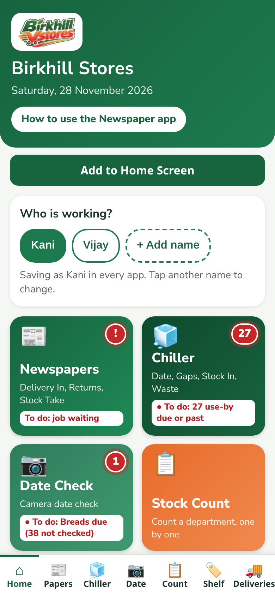
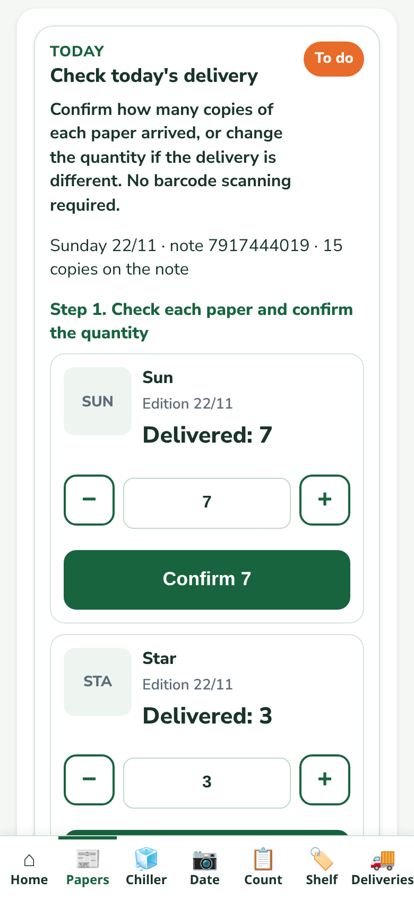
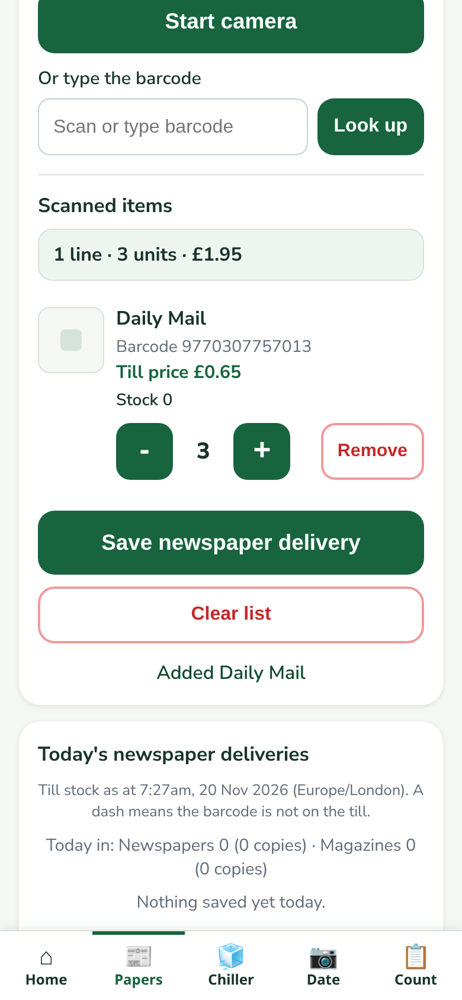
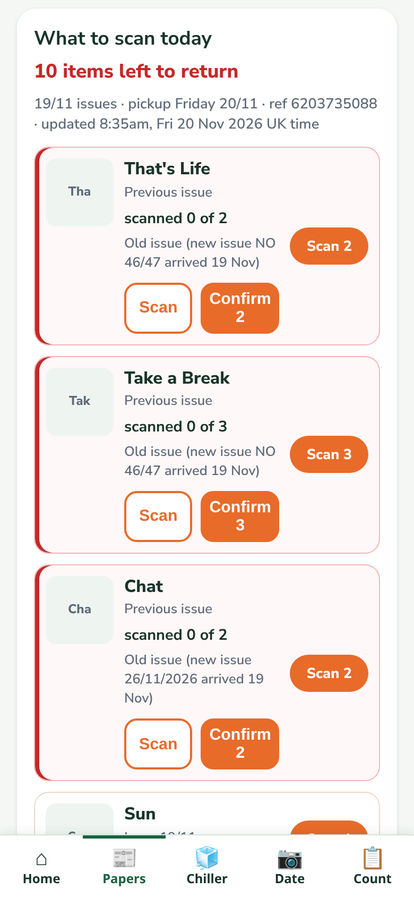
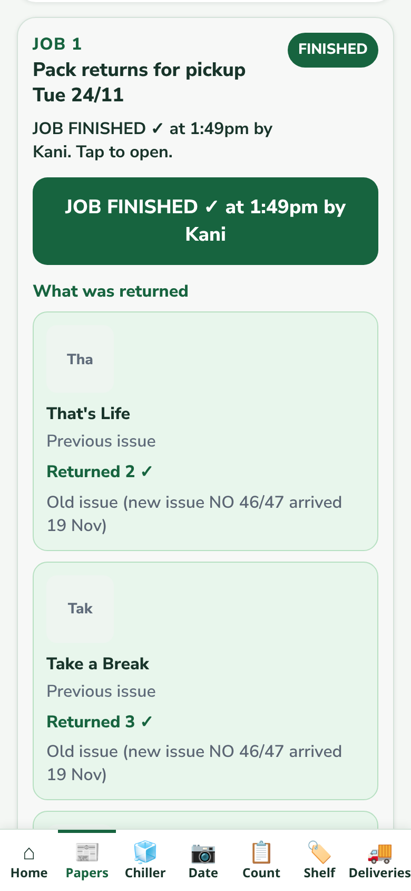
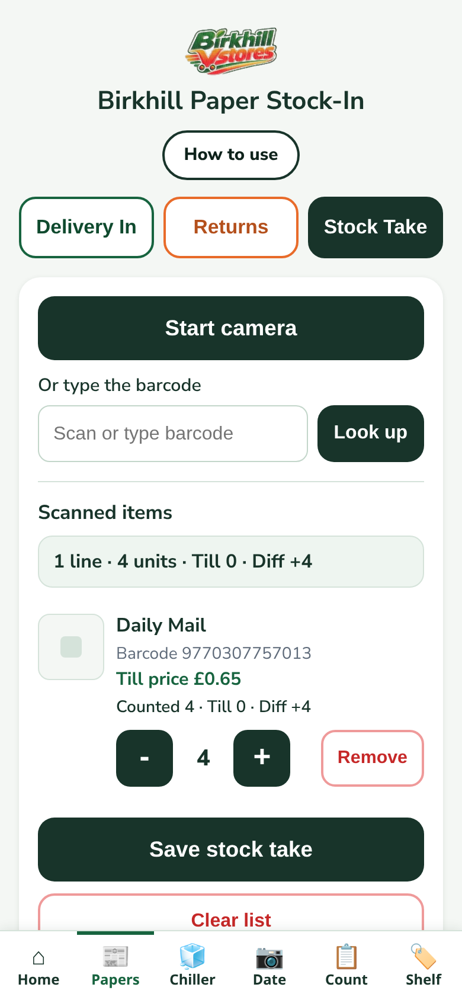
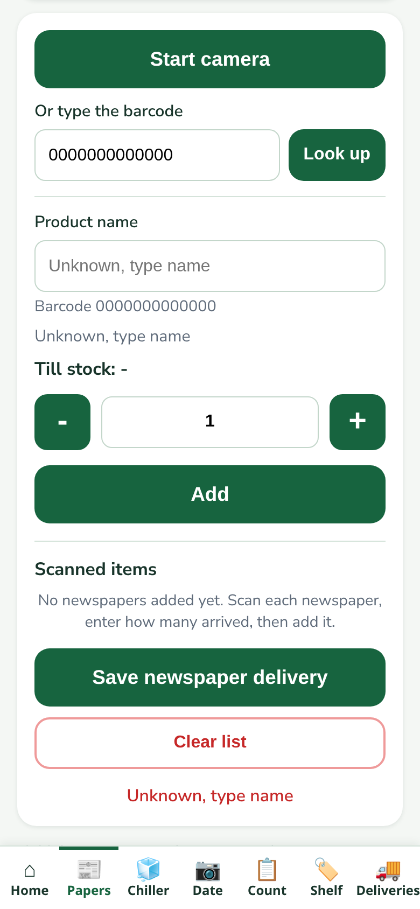

How to use the Newspaper app
Short guide for shop staff. Updated 20 November 2026, 7:48pm UK time.
Back to the Newspaper appShort guide for shop staff. Updated 20 November 2026, 7:48pm UK time.
Back to the Newspaper appStep 1 of 6
Open the link Vijay sent you. You will see the Birkhill home screen.
If a tile flashes red, there is a job waiting. Tap Newspapers to start the paper work.
Tap your name at the top so the app knows who is working.

Step 2 of 6
In the morning, tap Delivery In. Scan each newspaper on the Newspapers list, and each magazine on the Magazines list.
Check the Scanned items list. Use + or - to change the quantity, or Cancel if you scanned the wrong one (it asks Remove this scan?), then tap Save newspaper delivery.


Step 3 of 6
Tap Returns. The "What to scan today" list shows what to take off the shelf. Scan each item until the line shows Done.
Confirm return stays greyed until every line is scanned, and shows a note like Scan all items to confirm (3 of 6 done). You cannot type a quantity to skip scanning.
If you scan the wrong item, tap Cancel and confirm Remove this scan? Sun TV Magazine, Mail Weekend, You and Fabulous go back with their newspaper. Do not scan them on their own.

Step 4 of 6
At close, open Returns and look at "Tonight: count at close".
Count the unsold copies of each paper, then scan them as returns. Confirm return stays locked until today's list is fully scanned.

Step 5 of 6
Tap Stock Take when you need to count what is on the shelf.
Scan each title, enter how many you counted, then add it. Tap Save stock take when you have finished.

Step 6 of 6
If the camera cannot read a barcode, type the number in "Or type the barcode" and tap Look up.
If the name says "Unknown, type name", type the title yourself, then add it. You can still save the list as normal.

If a tile on the home screen flashes red, there is a job waiting.